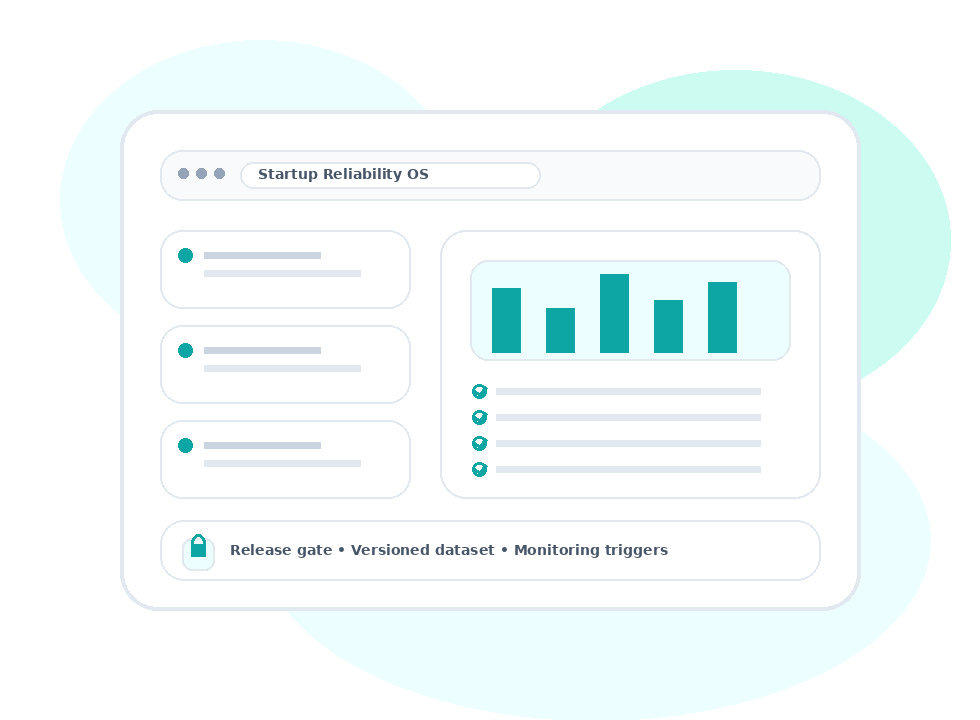

For AI Diagnostics Startups
Ship faster
and sell enterprise sooner
You win by shipping. But in diagnostics, shipping without traceability becomes a liability. Trinzz gives you an AI-native reliability OS: expert validation, measurable consensus, release gates, and evidence packs enterprise buyers trust.

SOC 2 Type II
ISO 27001:2022
HIPAA aligned
Evidence packs
Release gates
Enterprise buyers don’t buy “labels.” They buy proof.
Trinzz gives startups the artifacts that close deals: measurable QC, consensus logs, release change logs, and monitoring specs.
RFP-ready
Procurement-ready
Audit-friendly
A
Prelabel + prioritizeModels do easy cases. Experts focus on ambiguity.
B
Measure consensusAgreement metrics + adjudication = defensible ground truth.
C
Ship releasesVersioned datasets with artifacts buyers can review.
Startup mode vs enterprise‑ready mode
Same speed. Higher credibility.
| Typical startup | With Trinzz | |
|---|---|---|
| Ground truth | “Validated internally” | ✓ Consensus + adjudication artifacts |
| QC | Spot checks | ✓ Error taxonomy + measurable QC |
| Updates | Untracked versions | ✓ Release logs + gates |
| Monitoring | After the fact | ✓ Drift triggers pre‑pilot |
“How do you prove labels?”Consensus metrics + adjudication logs per release.
“What if data shifts?”Monitoring thresholds + escalation routing defined upfront.
“Will procurement approve?”Controls + evidence artifacts aligned to enterprise reviews.
Get a Reliability Readout (CG‑DRS) in days
Send a sample + manifest. We return a risk register, validation blueprint, and monitoring triggers your team can operationalize immediately.